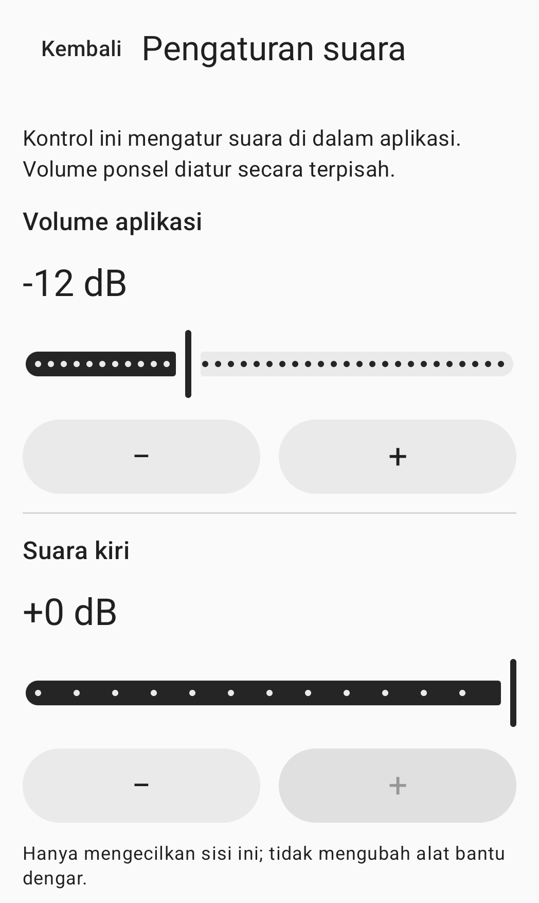

Atur suara sekitar secara manual
Suara sekitar.Anda yang mengatur.
Suara dari mikrofon ponsel,diteruskan ke headphone pilihan Anda.Atur tingkat suara, kiri/kanan, dan karakter suara.
Lihat cara pakaiBelum dirilis untuk umum.

Cara pakai
Hubungkan, atur, lalu mulai.
Hubungkan
Hubungkan headphone ke ponsel ini, lalu pilih keluaran di aplikasi. Mode bawaan menggunakan kabel atau USB. Untuk Bluetooth, aktifkan mode eksperimental dan pilih sendiri keluaran yang sudah terhubung.
Atur
Atur tingkat suara aplikasi, kiri/kanan, dan karakter suara. Volume media ponsel diatur secara terpisah. Kenakan headphone dan bersiaplah dengan volume rendah.
Mulai
Izinkan akses mikrofon, baca pemberitahuan sesi, lalu tekan tombol persetujuan dan mulai. Pemberian izin saja tidak mengaktifkan mikrofon. Hentikan melalui aplikasi atau notifikasi sesi.
Pengaturan suara
Pilih sendiri pengaturan Anda.
Pengaturan di aplikasi dan volume media ponsel merupakan pengaturan yang terpisah.
Tingkat suara aplikasi
Atur tingkat suara yang dikirim ke headphone pilihan Anda melalui aplikasi. Periksa juga volume media ponsel.
Kiri dan kanan
Kurangi tingkat suara tiap sisi secara terpisah. Kontrol ini tidak mengubah pengaturan headphone atau alat bantu dengar itu sendiri.
Karakter suara
Atur karakter suara secara manual. Aplikasi tidak memberikan kompensasi otomatis berdasarkan tes pendengaran.
Gambar di atas adalah potongan layar pengaturan suara yang sebenarnya. Kontrol sisi kanan dan karakter suara tidak terlihat dalam potongan ini.
Pertanyaan umum
Sebelum memulai
Bisakah saya memakai headphone Bluetooth?
Bluetooth bersifat eksperimental. Hubungkan headphone ke ponsel ini, aktifkan mode eksperimental, lalu pilih sendiri keluarannya. Jeda dan kualitas suara bergantung pada ponsel dan headphone Anda.
Apakah menyambungkan ulang headphone memulai sesi lagi?
Tidak. Sesi berakhir jika jalur audio, fokus audio, atau izin mikrofon hilang. Menyambungkan ulang headphone atau membuka kembali aplikasi tidak memulainya lagi. Mulai sesi secara manual saat Anda siap.
Bagaimana jika headphone saya tidak ada dalam daftar?
Periksa koneksi audio media Bluetooth di ponsel ini dan segarkan daftar keluaran. Panduan lebih lanjut tersedia di halaman dukungan.
Bagaimana cara menghapus rekaman atau data aplikasi?
Aplikasi tidak membuat file rekaman mikrofon. Lihat panduan data lokal untuk menghapus pengaturan suara, riwayat permintaan izin, atau catatan opsional dari uji coba terakhir.
Periksa sebelum memakai.
Untuk orang dewasa berusia 18 tahun ke atas dengan pendengaran normal, HearAssist adalah alat untuk mengatur suara sekitar secara manual. Aplikasi ini tidak ditujukan untuk mengompensasi gangguan pendengaran, menggantikan alat bantu dengar, menguji pendengaran, mendiagnosis, atau mengobati kondisi medis.
Kejelasan ucapan, latensi aktual, dan keamanan akustik belum terverifikasi. Penghilangan derau sepenuhnya dan latensi nol tidak dijamin.
Aplikasi belum dirilis untuk umum di toko aplikasi. Situs ini menyediakan informasi produk dan dukungan.